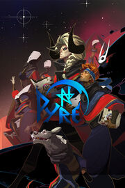

Pyre
Pyre
Detalles
|  | |
| Tiempo de juego | 2h 23m 0s |
| Última actividad | 25/4/2020 16:39:03 |
| Añadido | 16/3/2022 22:03:26 |
| Modificado | 17/3/2022 18:22:04 |
| Estado de finalización | Jugado |
| Librería | Steam |
| Fuente | Steam |
| Plataforma | PC (Windows) |
| Fecha de lanzamiento | 25/7/2017 |
| Puntuación de la Comunidad | 88 |
| Puntuación de la Crítica | 82 |
| Puntuación de usuario | |
| Género | Action Indie RPG |
| Desarrollador | Supergiant Games |
| Editor | Supergiant Games |
| Característica | Achievements Captions Available Cloud Saves Full Controller Support Multiplayer Pvp Remote Play On Phone Remote Play On Tablet Remote Play On TV Remote Play Together Shared/Split Screen Pvp Single Player Trading Cards |
| Enlaces | Punto de encuentro Discusiones Guías Noticias Página de la tienda PCGamingWiki Logros |
| Tag | |
Descripción
Pyre is a party-based RPG in which you lead a band of exiles to freedom through ancient competitions spread across a vast, mystical purgatory. Who shall return to glory, and who shall remain in exile to the end of their days?

 --the Supergiants
--the Supergiants
Key Features:
A New World From the Creators of Bastion and Transistor

Experience the biggest and most imaginative world yet from Supergiant! Get to know an ensemble cast of characters struggling to earn back their freedom as you make your way across the forsaken land called the Downside.Action-Packed Three-on-Three Battle System

Battle against a colorful cast of adversaries in pitched, high-stakes confrontations where each victory (or defeat!) brings your exiles closer to enlightenment. Choose three from your party for each Rite, and outfit them with mystic Talismans and powerful Masteries.A Branching Story with No Game-Over
In Pyre, you will never be forced to lose progress. Whether you prevail or you fail, your journey continues. The interactive narrative is expressed through a story that no two players will experience in quite the same way.Challenge a Friend in Versus Mode

On top of the single-player campaign, Pyre features a local two-player Versus Mode, where you can play against a friend (or CPU opponent) in one of the game's fast-paced ritual showdowns. Form your triumvirate from more than 20 unique characters.Rich, Atmospheric Presentation

Pyre once again showcases the award-winning talents of the team that created Bastion and Transistor. From the vibrant hand-painted artwork to the evocative musical score, every aspect of Pyre's presentation draws you into its fantasy world.Accessible, Customizable Controls and 4K Ultra HD Graphics!
Play with gamepad or mouse-and-keyboard using fully customizable controls custom-tailored to PC. The game offers a highly scalable challenge both in the campaign and Versus Mode. Experience it all in stunning 4K resolution (compatible display required)!
Unlock 'True Nightwing' Campaign Mode After Finishing the Story
Complete the Campaign, then go at it once more, 'ironman'-style, with a unique set of rules, higher stakes, and greater challenge! Explore Pyre's wide breadth of narrative outcomes as you re-play the story.